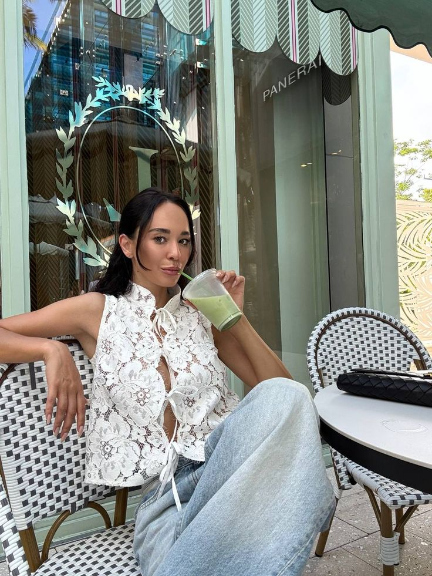

Mes Passions
Je m’appelle Ellia et je suis actuellement étudiante en classe de seconde GT au Sacré-Cœur. Depuis toujours, je suis passionnée par la mode. J’aime découvrir de nouveaux styles, suivre les tendances et exprimer ma personnalité à travers la manière dont je m’habille. Pour moi, la mode est une forme d’art, un moyen de créativité et d’expression qui permet de montrer qui je suis vraiment.
Cette passion m’inspire au quotidien et me motive à apprendre, observer et imaginer de nouvelles idées. Étudier au Sacré-Cœur m’aide aussi à développer mes projets et à m’épanouir dans un environnement qui encourage la curiosité et la découverte.
Mes passions principales :
- Mode
- Photographie
- Lecture
Mode
J’aime créer des tenues et suivre les tendances de la mode.
Photographie
Je prends plaisir à capturer des moments uniques avec mon appareil photo.

Lecture
La lecture me permet de voyager dans différents mondes et d’apprendre de nouvelles choses.